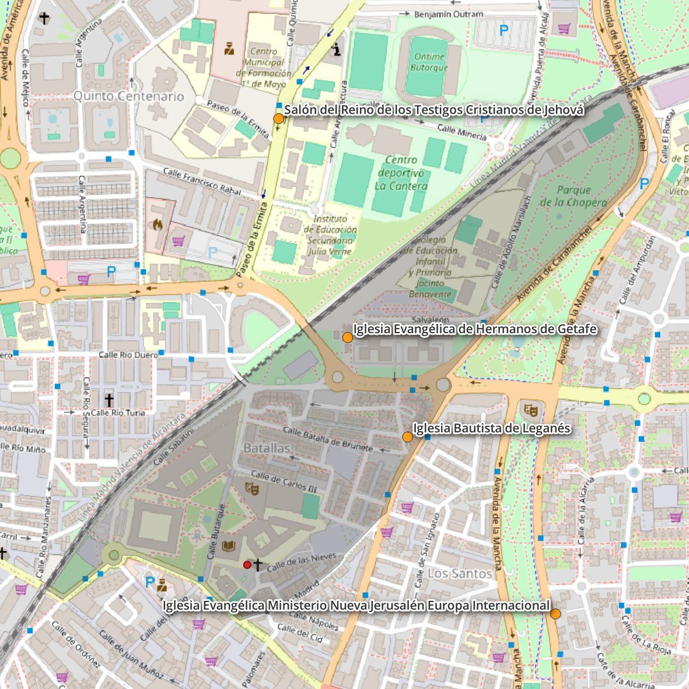
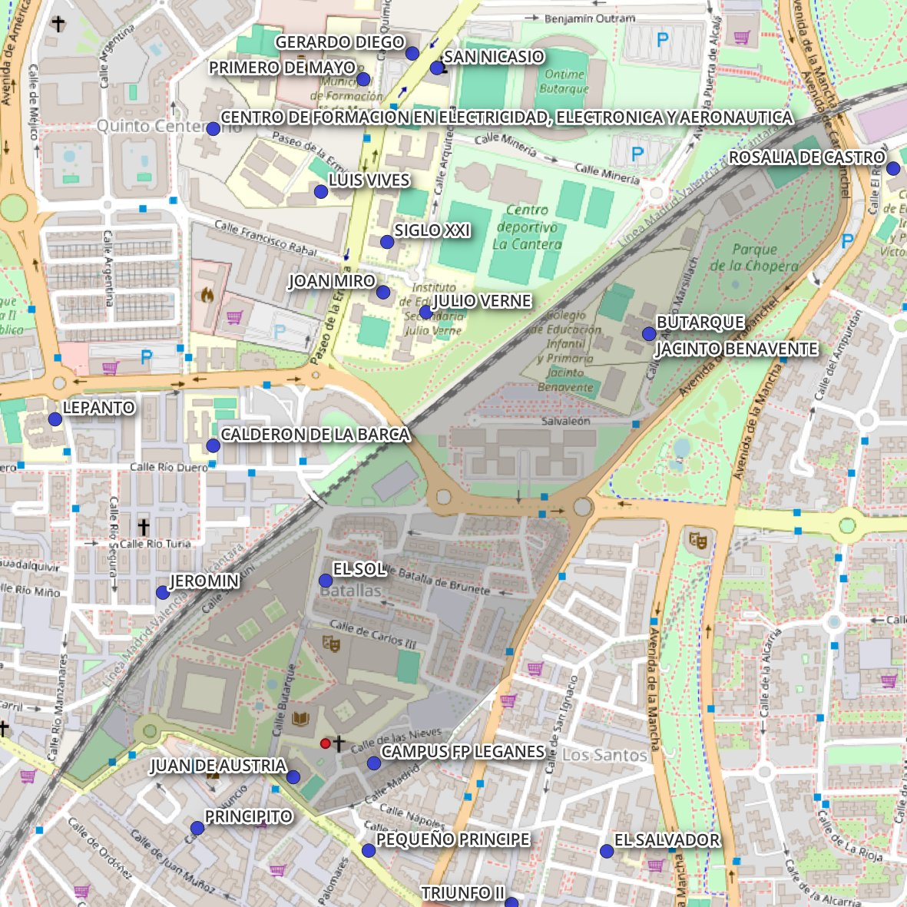

Puntos de interés en el territorio parroquial
Parroquia Nuestra Señora de Butarque (Leganés) · Arciprestazgo de Leganés
Entidades religiosas no católicas

2 entidades religiosas no católicas en el territorio de la parroquia.
Evangélicos (2)
- Iglesia Bautista de LeganésPlaza de Navarrevisca 1 Bajo A, Leganés
- Iglesia Evangélica de Hermanos de GetafeAvenida del 2 de Mayo 5, Leganés
Fuente: Registro de Entidades Religiosas del Ministerio de la Presidencia, Justicia y Relaciones con las Cortes. Situación en el mapa: dirección geocodificada con CartoCiudad (IGN) o Nominatim (OpenStreetMap).
Centros educativos

5 centros educativos en el territorio de la parroquia (público: 3, privado: 2).
| Centro | Tipo | Titularidad | Domicilio | Web |
|---|---|---|---|---|
| BUTARQUE | Instituto de educación secundaria | Público | Calle Adolfo Marsillach, 5, 28918 Leganés | Página web |
| CAMPUS FP LEGANES | Centro privado de formación profesional específica | Privado | Calle Siete Picos, 6, 28912 Leganés | Página web |
| EL SOL | Escuela infantil privada | Privado | Calle Butarque, 42, 28912 Leganés | Página web |
| JACINTO BENAVENTE | Colegio de educación infantil y primaria | Público | Calle Adolfo Marsillach, 3, 28914 Leganés | Página web |
| JUAN DE AUSTRIA | Colegio de educación infantil y primaria | Público | Avenida Universidad, 28, 28911 Leganés | Página web |
Fuente: registro de centros educativos de la Comunidad de Madrid. Solo se recogen los centros de alta.